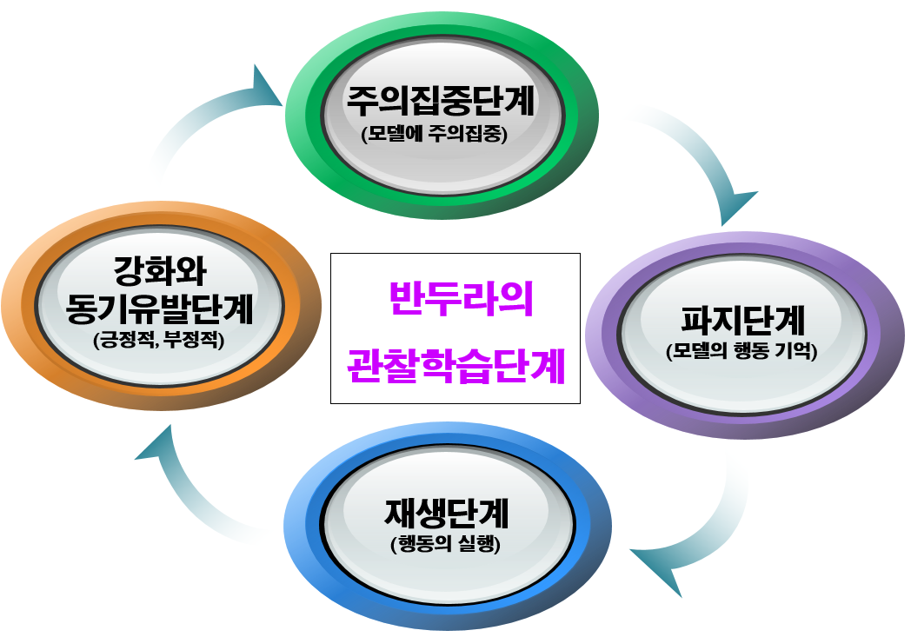

1. 사회학습이론의 의의
반두라(Albert Bandura, 1925∼ )는 캐나다 출신의 세계적인 심리학자로, 1953년부터 미국 스탠퍼드대학교 심리학과 교수로 재직하며 현대 심리학의 여러 분야에 지대한 영향을 미쳐왔다. 그는 학습 이론의 흐름 속에서 행동주의의 조건형성과 인지이론을 통합하여 사회학습이론을 제안하였다. 현재 이 이론은 모방, 공격성, 행동치료, 교육 및 상담 등 다양한 영역에서 폭넓게 활용되고 있으며, 특히 인간 발달과 사회화 과정을 설명하는 데 중요한 틀을 제공한다.
2. 사회학습이론 개요
반두라의 사회학습이론(social learning theory)은 인간의 행동이 단순히 보상이나 처벌의 결과로만 형성되는 것이 아니라, 다른 사람의 행동을 관찰하고 이를 모방하는 과정에서도 학습이 이루어진다고 본다. 즉, 사람은 직접 경험뿐만 아니라 간접 경험을 통해서도 새로운 행동을 습득하며, 이러한 과정에는 인지적 요소가 필수적으로 작용한다. 이는 당시 행동주의가 간과했던 ‘사람이 정보를 처리하고 의미를 부여하는 과정’을 강조했다는 점에서 큰 의의가 있다.
3. 관찰학습의 단계
반두라는 관찰학습(observational learning)이 단순한 외현적 행동 관찰에 그치지 않고, 학습자의 내적 인지 과정을 통해 이루어진다고 설명하였다. 그는 관찰학습의 과정으로 다음과 같이 제시하였다.

1) 주의집중 단계(모델에 주의 집중)
학습은 우선 모델의 행동에 주의를 기울이는 것에서 시작된다. 아동은 자기 또래, 힘이 세거나 매력적인 대상, 혹은 존경하는 인물을 모방하려는 경향이 있다. 부모, 형제·자매, 친구, 교사뿐만 아니라 현대 사회에서는 대중매체 속 연예인이나 인플루언서도 중요한 모델이 된다. 따라서 아이가 무엇을 관찰하는지, 어떤 행동에 주의를 기울이는지가 학습의 첫걸음을 결정한다.
2) 파지 단계(모델의 행동 기억)
모델의 행동은 단순히 보는 것만으로는 충분하지 않다. 학습자는 관찰한 행동을 시각적·언어적 형태의 상징 부호로 저장하여 기억해야 한다. 만약 관찰한 행동이 기억 속에 남지 않는다면, 이후 모방이나 실천이 어렵다. 이 단계에서 언어적 설명이나 시각 자료, 반복 관찰은 기억의 정확성을 높이는 데 도움을 준다.
3) 재생 단계(행동의 실행)
학습자는 기억한 행동을 실제로 재현해야 한다. 그러나 기억만으로는 완전한 모방이 이루어지지 않으며, 반복적인 연습과 피드백을 통해 행동이 세련되고 정확해진다. 예를 들어, 운동 기술이나 악기 연주처럼 복잡한 행동일수록 재생 단계에서의 반복 훈련이 필수적이다.
4) 강화와 동기유발 단계
학습한 행동을 지속적으로 수행하기 위해서는 동기가 필요하다. 과거의 긍정적 경험(칭찬, 보상)이나 타인의 성공 사례를 관찰하는 것은 행동 수행 의지를 높인다. 또한 부정적 결과(벌, 비난)는 행동 억제에 영향을 준다. 반두라는 이러한 강화가 직접적일 수도 있고, 타인을 관찰하여 간접적으로 경험하는 ‘대리강화(vicarious reinforcement)’일 수도 있음을 강조하였다.
4. 반두라의 자기효능감
반두라는 관찰과 모방을 통해 습득한 지식과 기술이 어떻게 행동으로 전환되는지를 설명하기 위해 자기효능감 (Self-Efficacy) 개념을 도입하였다. 자기효능감은 ‘특정 상황에서 요구되는 행동을 성공적으로 수행할 수 있다는 개인의 신념’으로, 동일한 능력을 가진 사람이라도 자기효능감이 높은 사람은 도전적 과제를 기꺼이 시도하고 지속하는 반면, 낮은 사람은 회피하거나 쉽게 포기한다. 이는 학습 성취, 진로 선택, 대인관계, 심리적 회복탄력성 등에 직결되므로 교육·상담 현장에서 중요한 변인으로 다뤄진다.
5. 반두라의 사회학습이론의 시사점
반두라는 사회학습이론을 통해 인간 행동 발달이 단순한 보상·벌의 결과가 아니라, 관찰만으로도 가능함을 입증했다. 이는 모델의 존재와 역할이 교육 및 발달 과정에서 얼마나 중요한지를 보여준다. 아이들은 성장하면서 가족, 교사, 또래, 유명인 등 다양한 모델을 접하며 학습 영역을 확장한다.
그러나 가장 오랜 시간, 가장 가까이에서 영향을 미치는 모델은 부모다. 부모의 언행, 문제 해결 방식, 감정 표현은 아이에게 강력한 학습 자료가 되며, 무의식적으로 내면화된다.
따라서 부모가 올바른 가치관과 태도를 갖고 일관성 있는 행동을 실천할 때, 이는 가장 강력하고 지속적인 교육 효과를 낳는다. 상담 및 교육 현장에서는 이러한 점을 고려하여 모델링 전략을 설계하고, 긍정적 관찰학습 환경을 제공하는 것이 필요하다.
참고문헌
Bandura, A. (1977). Social Learning Theory. Englewood Cliffs, NJ: Prentice-Hall.
Bandura, A. (1997). Self-Efficacy: The Exercise of Control. New York: W.H. Freeman.
박영신, 전귀연, 김의철 (2018). 『현대심리학의 이해』. 서울: 학지사.
이순형, 오경자, 이현림 (2015). 『발달심리학』. 서울: 학지사.
2022.05.17 - [이론] - 반두라의 발달이론 - 사회적 관계를 위한 모방학습
반두라의 발달이론 - 사회적 관계를 위한 모방학습
인간의 모든 행동은 관찰이나 모방을 통한 학습 인간이 어떤 행동을 학습하는 데 있어서 외부로부터의 자극뿐 만 아니라 인간 내부의 인지적 요인이 함께 작용하여 학습이 진행된다는 것이다.
think-sis.co.kr